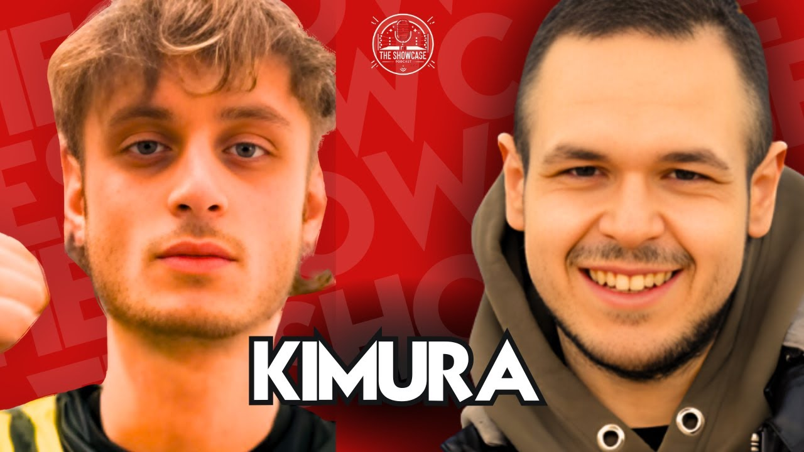

Kimura: chi è il rapper del wrestling e cosa mi ha raccontato a The Showcase
Kimura è il rapper italiano che fa musica sul wrestling, dal CM Punk Freestyle all'EP Wrestling Vortex. A The Showcase mi ha raccontato da dove viene il nome, come è nato il progetto e perché il suo freestyle su John Cena è esploso su TikTok.
Un rapper che parla di wrestling. Non come battuta in mezzo a una strofa, ma come progetto intero. In Italia, ragazzi, fino a poco tempo fa non c'era. Poi è arrivato Kimura.
Ci eravamo incrociati un sacco di volte tra live e contenuti. Alla fine ci siamo seduti e abbiamo fatto una puntata di The Showcase insieme. L'abbiamo registrata a inizio marzo 2025 ed è uscita il 10 aprile 2025: la trovi intera qui sopra.
Chi è Kimura
Kimura è un rapper ligure che ha deciso di fare del wrestling il suo tratto distintivo. Titoli dei brani, campionamenti, immaginario, video: tutto parla la lingua dei fan.
Nella sua discografia trovi CM Punk Freestyle e Mark Henry (Hall of Pain), entrambi dentro l'EP Wrestling Vortex, uscito il 13 settembre 2024. E poi il freestyle su John Cena, quello che gli ha cambiato le cose.
Prima di Kimura c'era un altro progetto, con un altro nome, che parlava di rivalsa e di strada. Me l'ha detto lui: a un certo punto si sentiva "uno dei tanti" che diceva le stesse cose nello stesso modo. Intorno al 2022 ha cambiato nome e direzione.
Il nome viene da Brock Lesnar
Gliel'ho chiesto subito, perché avevo il sospetto. E avevo ragione.
Kimura viene dalla Kimura Lock di Brock Lesnar. Quella che Lesnar usava al suo ritorno in WWE, nel 2012, quando sembrava spezzare il braccio a chiunque, Triple H compreso. Kimura era un ragazzino e quella scena gli è rimasta in testa per anni.
Il senso che ci ha dato è bellissimo: una presa da cui è quasi impossibile uscire, se applicata bene. Quasi. Ed è il rapporto che ha con la sua musica.
Poi ci siamo persi in un dibattito che chi è cresciuto in quegli anni conosce bene: quel "crack" del braccio era vero o aggiunto in post produzione? Non lo sapremo mai.
L'idea che aveva "sotto gli occhi"
Questa è la parte che mi ha colpito di più.
Kimura era in un periodo di blocco. Provava sound diversi e niente lo convinceva. Si è messo a leggere L'atto creativo di Rick Rubin e si è fermato su un capitolo che dice, in breve, che spesso la soluzione l'hai sempre avuta davanti.
Lì il click: il wrestling. Lo segue da quando era piccolo, ne sa un'infinità, e in Italia nessuno nel rap l'aveva mai trattato sul serio. In America invece è cultura: Westside Gunn, per dire, ha messo in piedi un suo evento di wrestling. E pensate a MVP con le collane o a John Cena che rappava le sue entrate.
Il freestyle su John Cena esploso su TikTok
Il momento in cui Kimura ha capito che la strada era giusta ha un nome: John Cena.
Mi ha raccontato che l'aveva registrato ad aprile 2024, prima ancora che Cena annunciasse il ritiro. Il ragionamento era semplice: "Com'è possibile che nessuno abbia mai campionato la theme song di John Cena?". È uscito a dicembre.
Su Instagram è andato bene. Ma la sorpresa è stata TikTok: l'ha caricato e per giorni non l'ha nemmeno aperto. Una mattina si sveglia e il video era esploso. Tanti l'hanno usato come suono.
E vi dico la verità: a me l'avevano girato in un gruppo WhatsApp prima ancora di conoscerlo. "Senti questo ragazzo". Sono rimasto a bocca aperta.
"Noi siamo dove la TV si spegne"
Abbiamo parlato anche di noi creator. Kimura ci ha ringraziato per quello che facciamo per il wrestling in Italia, e io gli ho detto una cosa che penso davvero: noi siamo dove la TV si spegne. Guardi lo show, spegni, e se vuoi sapere come continua la storia arrivi da noi.
In quel periodo, con il turn heel di Cena a Elimination Chamber appena successo, Kimura aveva già una certezza: Cena avrebbe vinto il titolo a WrestleMania. La puntata è uscita il 10 aprile 2025. A WrestleMania 41, il 19 aprile, Cena ha battuto Cody Rhodes ed è diventato campione. Previsione centrata in pieno.
Rivista oggi, questa parte della chiacchierata fa un certo effetto. Ci aveva visto lungo.
Stone Cold e cos'è il wrestling per Kimura
Il suo wrestler preferito di sempre? Stone Cold Steve Austin. Non tanto per la tecnica, ma per quello che ha rappresentato: l'Attitude Era, quell'aria cruda e vera, la rivalità con The Rock e con Vince McMahon.
Alla domanda fissa di The Showcase, cos'è per te il wrestling, ha risposto così: un compagno di viaggio. Uno che lo accompagna da sempre e che, dice, si porterà dietro fino a 90 anni. E un'ispirazione, perché oltre allo spettacolo porta dei valori.
Dove seguire Kimura
- Musica: su Spotify e Apple Music cercando "Kimura", e sul canale YouTube Kimura - Topic, dove c'è tutto l'EP Wrestling Vortex
- Freestyle e video: su TikTok e Instagram, dove pubblica i suoi pezzi
Se ti piace questo incrocio tra musica e wrestling, recupera le altre puntate nella sezione The Showcase dei video e nella rubrica The Showcase. E se ti è venuta voglia di Lesnar, passa dalla pagina di Brock Lesnar.
Guarda l'intervista intera qui sopra: dentro c'è molto di più, dai vecchi programmi di wrestling in TV ai CM Punk nella gabbia. E iscriviti al canale Tony Wrestling su YouTube per non perderti i prossimi ospiti.
Fonti:
- Intervista completa: L'unico rapper che parla di wrestling: Kimura (The Showcase, 10 aprile 2025)
- CM Punk Freestyle - Kimura (Wrestling Vortex, distribuito da DistroKid, uscito il 13 settembre 2024)
- Mark Henry (Hall of Pain) - Kimura
- Kimura, il rapper italiano con i suoi album sul wrestling (The Shield of Wrestling)
Domande frequenti
Chi è Kimura?
Kimura è un rapper italiano che costruisce la sua musica intorno al wrestling. Ha pubblicato brani come CM Punk Freestyle e Mark Henry (Hall of Pain), raccolti nell'EP Wrestling Vortex uscito a settembre 2024, e un freestyle su John Cena che è diventato virale su TikTok.
Dove ascoltare e seguire Kimura?
La sua musica è su Spotify, Apple Music e sul canale YouTube "Kimura - Topic", dove trovi Wrestling Vortex. Pubblica i suoi freestyle anche su TikTok e Instagram.
Di cosa avete parlato a The Showcase?
Dell'origine del nome (la Kimura Lock di Brock Lesnar), di come è passato dal vecchio progetto al rap sul wrestling, del freestyle su John Cena esploso su TikTok, del rapporto tra rap e wrestling in America e del suo wrestler preferito, Stone Cold Steve Austin.